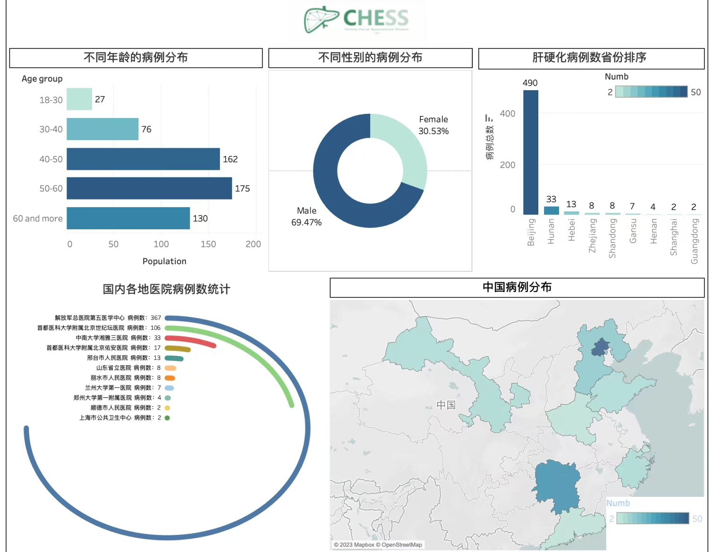

主页
我们成果
关于我们
联系我们
登陆账号
注册账号
门静脉高压
全国统计图
门静脉
高压症是一组由门静脉压力持久增高引起的
症候群
。大多数由
肝硬化
引起，少数继发于门静脉主干或
肝静脉梗阻
以及原因不明的其他因素。当门
静脉血
不能顺利通过肝脏回流入
下腔静脉
就会引起门静脉压力增高。表现为门-体静脉间
交通支
开放，大量门静脉血在未进入肝脏前就直接经交通支进入体循环，从而出现腹壁和
食管静脉
扩张、
脾脏肿大
和
脾功能亢进
、
肝功能
失代偿和
腹水
等。最为严重的是
食管
和胃连接处的静脉扩张，一旦破裂就会引起严重的
急性上消化道出血
危及生命。
